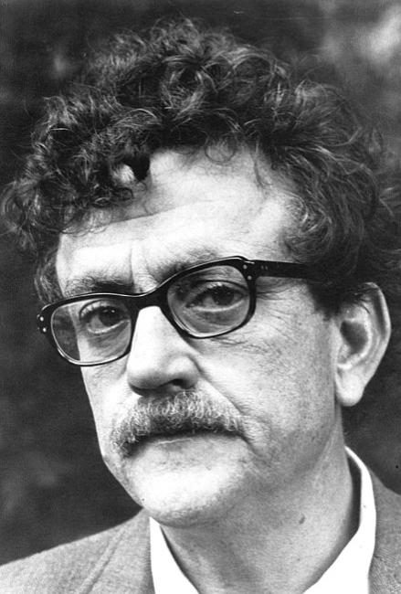

Kurt Vonnegut Jr. (1922 – 2007) was an American writer. In a career spanning over 50 years, Vonnegut published fourteen novels, three short story collections, five plays, and five works of non-fiction, with further collections being published after his death. He is most famous for his darkly satirical, best-selling novel Slaughterhouse-Five (1969).
The Science Fiction and Fantasy Hall of Fame inducted Vonnegut posthumously in 2015.
Novels
Player Piano (1952)
The Sirens of Titan (1959)
Mother Night (1961)
Cat's Cradle (1963)
God Bless You, Mr. Rosewater (1965)
Slaughterhouse-Five (1969)
Breakfast of Champions (1973)
Slapstick (1976)
Jailbird (1979)
Deadeye Dick (1982)
Galápagos (1985)
Bluebeard (1987)
Hocus Pocus (1990)
Timequake (1997)
Novellas
Sun Moon Star (1980)
God Bless You, Dr. Kevorkian (1999)
Short fiction collections
Canary in a Cat House (1961)
Welcome to the Monkey House (1968)
Bagombo Snuff Box (1997)
Armageddon in Retrospect (2008) – short stories and essays
Look at the Birdie (2009)
While Mortals Sleep (2011)
We Are What We Pretend to Be (2012)
Sucker's Portfolio (2013)
Complete Stories (2017)
Plays
The First Christmas Morning (1962)
Fortitude (1968)
Happy Birthday, Wanda June (1970)
Between Time and Timbuktu (1972)
Stones, Time and Elements (A Humanist Requiem) (1987)
Make Up Your Mind (1993)
L’Histoire du Soldat (1997)
Nonfiction
Wampeters, Foma and Granfalloons (1974)
Palm Sunday (1981)
Nothing Is Lost Save Honor: Two Essays (1984)
Fates Worse Than Death (1991)
A Man Without a Country (2005)[64]
Kurt Vonnegut: The Cornell Sun Years 1941–1943 (2012)
If This Isn't Nice, What Is?: Advice to the Young (2013)
Vonnegut by the Dozen (2013)
Kurt Vonnegut: Letters (2014)
Art
Kurt Vonnegut Drawings (2014)

{kind=link}